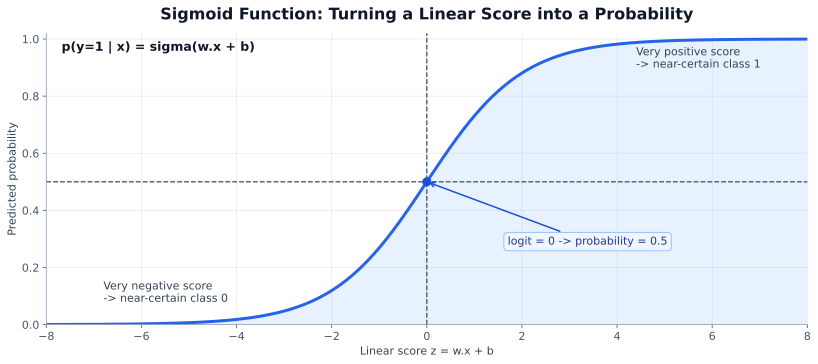
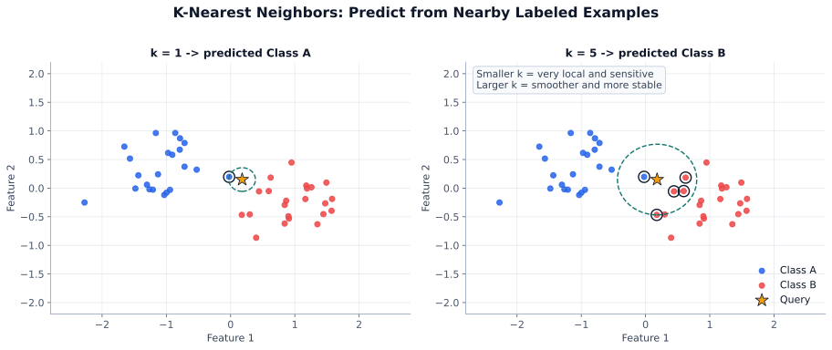
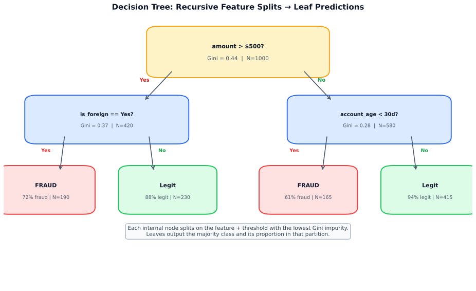
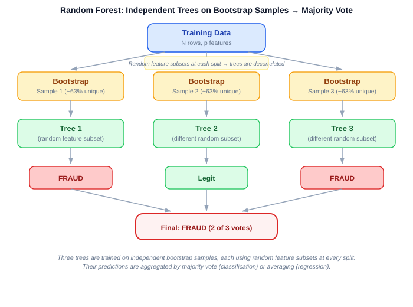
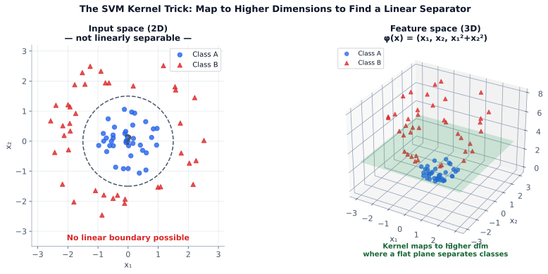
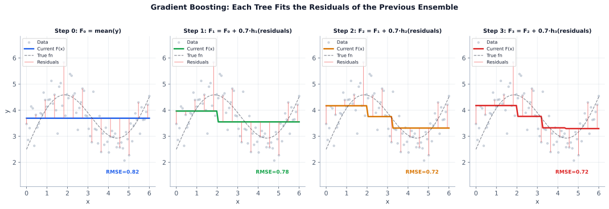
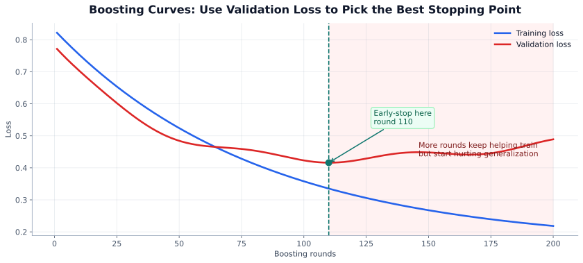

Explore this chapter with hands-on visualizations: Decision Boundaries, Bias-Variance, Gradient Boosting, SVM Margin | Regularization Path, Random Forest Vote Visualizer
Supervised learning is the foundation of most applied ML: you have labeled (input, output) pairs and want to learn a function that generalizes to new inputs. This chapter covers the core algorithms — from linear regression to gradient boosting — along with regularization, ensemble methods, and model interpretability.
What you will learn:
| Section | Topic |
|---|---|
| 5.1 | The supervised learning framework |
| 5.2 | Linear regression |
| 5.3 | Logistic regression |
| 5.4 | K-Nearest Neighbors |
| 5.5 | Naive Bayes |
| 5.6 | Decision trees and random forests |
| 5.7 | Support vector machines |
| 5.8 | Gradient boosting and XGBoost |
| 5.9 | Ensemble methods |
| 5.10 | Regularization (L1, L2, ElasticNet) |
| 5.11 | Hyperparameter optimization: grid, random, Bayesian (Optuna) |
| 5.12 | Practitioner’s Reference: model assumptions, strengths/weaknesses, complexity, selection framework, data pathologies, production considerations |
Prerequisites: Statistics and probability (Chapter 1), math foundations (Chapter 2), Python (Chapter 3).
Supervised learning is the most commonly used form of ML. You have a dataset of labeled (input, output) pairs and you want to learn a function that generalizes to new inputs.
| Element | Description | Example |
|---|---|---|
| Input (x) | Features / predictors | house size, user clicks, pixel values |
| Output (y) | Label / target | price, fraud (0/1), next word |
| Model f | Learned mapping from x to y | linear regression, decision tree, neural net |
| Loss L | How wrong the prediction is | MSE, cross-entropy, hinge |
| Training | Minimize loss on training data | gradient descent, analytical solution |
| Generalization | Perform well on unseen data | goal of the whole exercise |
You split your data into training data and test data. The model only ever sees the training data while learning. The test data is locked away — it represents “the real world.” Now train models of increasing complexity and measure error on both.
Training error always goes down as complexity increases. Always. A more flexible model can always memorise its training data better.
Test error goes down at first, then comes back up. That U-shape is where the entire story lives.
The gap between training error and test error is your signal:
The sweet spot is where test error is minimised — the model is complex enough to capture the true signal, but not so complex that it chases noise.
At any point on the complexity axis, the total prediction error decomposes as:
Error = Bias² + Variance + Irreducible Noise
This isn’t a formula for the sweet spot — it’s the error breakdown for every model you could choose. As you move right (more complex), the Bias² term shrinks but the Variance term grows. As you move left (simpler), Variance shrinks but Bias² grows. Irreducible noise stays constant — it’s the randomness in the data that no model can remove. The sweet spot is simply where Bias² + Variance is at its minimum:
Practical toolkit for finding the sweet spot: Regularisation (L1/L2, dropout, tree-depth limits) reduces variance by constraining complexity. Cross-validation gives you a reliable estimate of test error so you can compare models. Early stopping halts training before the model starts memorising noise. More training data reduces variance (harder to memorise a bigger dataset). Simpler model reduces variance but may increase bias — always check both curves.
Linear regression is the workhorse of prediction: given a set of input features, it outputs a continuous number by combining those features in a weighted sum. It is the natural first model to try whenever you need to answer "How much?" or "How many?"
Each feature gets a coefficient (β) that measures its contribution to the prediction. The model learns these coefficients by minimising the total squared error across all training examples.
Key: If the question is “how much?”, it’s usually regression.
Linear regression appears simple, but it is one of the most widely deployed models in industry because of three properties: speed (trains in seconds, even on millions of rows), interpretability (every coefficient has a clear business meaning), and reliability (well-understood theory, easy to debug).
Key: Predictions are estimates, not guarantees. The value of linear regression is that those estimates are fast, transparent, and often surprisingly accurate.
\[ y \in \mathbb{R} \]
Examples: house price, sales, score, delivery time, CLV.
\[ x_1, x_2, \dots, x_n \]
\[ \mathbf{x} = [x_1, x_2, \dots, x_n] \]
\[ \hat{y} = f(\mathbf{x}) \]
\[ e_i = y_i - \hat{y}_i \]
\[ \min_{\theta} \sum_{i=1}^{n} L\left(y_i, \hat{y}_i\right) \]
Simple:
\[ \hat{y} = \beta_0 + \beta_1 x \]
Multiple:
\[ \hat{y} = \beta_0 + \beta_1 x_1 + \beta_2 x_2 + \dots + \beta_p x_p \]
Works well when: the relationship is roughly linear, coefficients are stable, and interpretability matters.
Watch out for: nonlinear patterns, outliers pulling the fit, multicollinearity between features, and omitted variables that bias coefficients.
Key: Coefficients are additive feature effects; sign and size matter.
In all formulas below: \(y_i\) = actual value, \(\hat{y}_i\) = predicted value, \(\bar{y}\) = mean of actual values, \(n\) = number of observations.
| Metric | Formula | Best for |
|---|---|---|
| MAE | average absolute error | interpretable, more robust to outliers |
| MSE | average squared error | optimization, punishes large misses |
| RMSE | square root of MSE | target units + penalizes large misses |
| \(R^2\) | variance explained vs mean baseline | fit relative to predicting mean |
MAE
\[ \text{MAE} = \frac{1}{n}\sum_{i=1}^{n}|y_i - \hat{y}_i| \]
MSE
\[ \text{MSE} = \frac{1}{n}\sum_{i=1}^{n}(y_i - \hat{y}_i)^2 \]
RMSE
\[ \text{RMSE} = \sqrt{\frac{1}{n}\sum_{i=1}^{n}(y_i - \hat{y}_i)^2} \]
\(R^2\)
\[ R^2 = 1 - \frac{\sum_{i=1}^{n}(y_i - \hat{y}_i)^2}{\sum_{i=1}^{n}(y_i - \bar{y})^2} \]
| Metric | Penalizes big errors more? | Same units as target? | More robust to outliers? |
|---|---|---|---|
| MSE | Yes | No | No |
| RMSE | Yes | Yes | No |
| MAE | No | Yes | Yes |
\[ e = y - \hat{y} \]
After fitting a regression model, always plot residuals vs fitted values. The shape of that cloud tells you exactly what is wrong (or right) with the model:
| Pattern | Diagnosis | Fix |
|---|---|---|
| Random scatter around 0 | Good — assumptions met | — |
| Fan/funnel (spread grows with fitted value) | Heteroskedasticity — non-constant error variance | Log-transform y; use weighted regression |
| Curved pattern (U-shape or wave) | Missing nonlinear term or interaction | Add polynomial feature; try a nonlinear model |
| Systematic outliers | Data quality issues or influential points | Investigate; consider robust regression |
Key: Good residual plots look random and centered near 0. Any systematic pattern means the model is missing something.
\[ R^2 = 1 - \frac{\sum (y_i - \hat{y}_i)^2}{\sum (y_i - \bar{y})^2} \]
Adjusted \(R^2\): penalizes unnecessary predictors
\[ R^2_{\text{adj}} = 1 - (1 - R^2)\frac{n - 1}{n - p - 1} \]
Key: High \(R^2\) does not guarantee good generalization.
| Situation | Train error | Test error | Meaning |
|---|---|---|---|
| Underfitting | High | High | model too simple |
| Good fit | Low | Low | captures signal |
| Overfitting | Very low | Higher | learned noise |
| Type | Idea | Use when |
|---|---|---|
| Simple linear | one feature, straight line | quick baseline |
| Multiple linear | many features, linear combo | interpretable baseline |
| Polynomial | add \(x^2\), \(x^3\), … | simple curvature |
| Ridge | linear + \(L2\) penalty | many correlated features |
| Lasso | linear + \(L1\) penalty | shrinkage + feature selection |
| Elastic net | \(L1 + L2\) | many related predictors |
Ridge
\[ \text{Loss} = \text{MSE} + \lambda \sum_{j=1}^{n}\beta_j^2 \]
Where: \(\lambda\) = regularization strength (higher → more shrinkage), \(\beta_j\) = regression coefficients.
Lasso
\[ \text{Loss} = \text{MSE} + \lambda \sum_{j=1}^{n}|\beta_j| \]
Key: Start simple; residuals often reveal the next improvement.
House-price model:
\[ \hat{y} = 50000 + 200 \cdot (\text{size}) + 15000 \cdot (\text{bedrooms}) - 1000 \cdot (\text{age}) \]
For size \(=1200\), bedrooms \(=3\), age \(=10\):
\[ \hat{y} = 50000 + 200(1200) + 15000(3) - 1000(10) \]
\[ \hat{y} = 50000 + 240000 + 45000 - 10000 = 325000 \]
\[ \$325{,}000 \]
If actual \(= \$340{,}000\):
\[ e = y - \hat{y} = 340000 - 325000 = 15000 \]
Coefficient interpretation: - +1 sq ft → about +$200 - +1 bedroom → about +$15,000 - +1 year age → about -$1,000
Simple model with size only:
\[ \hat{y} = 50000 + 180(\text{size}) \]
For size \(=1500\):
\[ \hat{y} = 50000 + 180(1500) \]
\[ \hat{y} = 50000 + 270000 = 320000 \]
\[ \$320{,}000 \]
If actual \(= \$310{,}000\):
\[ e = y - \hat{y} = 310000 - 320000 = -10000 \]
| Use regression when | Avoid plain regression when | Use caution when |
|---|---|---|
| target is numeric | output is a class label | censored outcomes |
| error magnitude matters | need class probabilities/classification | highly skewed target |
| estimating price/sales/time/cost/demand | extrapolating beyond training range |
| Model | Use when |
|---|---|
| Linear regression | roughly linear + interpretable |
| Polynomial regression | simple curvature needed |
| Ridge/Lasso/Elastic Net | many predictors, regularization needed |
| Tree / RF / GBM regression | nonlinear interactions matter |
Key: Use linear regression as baseline; move to flexible models if residuals or validation show missed structure.
Assumptions
• Linearity: y is a linear function of X
• Independence of observations
• Homoscedasticity: constant error variance
• Normality of residuals (for inference)
• No multicollinearity among features
If violated: Biased coefficients; inflated standard errors; poor predictions
Strengths
✓ Highly interpretable coefficients
✓ Closed-form solution (OLS)
✓ Fast training and inference
✓ Reliable extrapolation if form is correct
✓ Foundation for Lasso / Ridge regularization
Weaknesses
✗ Assumes linear relationship
✗ Sensitive to outliers
✗ Cannot capture interaction terms without engineering
✗ Assumes homoscedasticity
Computational Complexity
Training: O(nd²) • Inference: O(d) • Memory: O(d) • Scalability: Excellent
Bias–Variance Quick Fix
Underfitting (high bias)
• Add polynomial or interaction features
• Reduce regularization strength (lower alpha)
• Switch to a more flexible model (tree, neural net)
Overfitting (high variance)
• Increase regularization (Ridge / Lasso / Elastic Net)
• Remove noisy or irrelevant features
• Collect more training data
See Section 5.12.7 for bias–variance profiles across all models.
Key: Use logistic regression for interpretable classification baselines. If it works, deploy it — don’t over-engineer.
Linear regression outputs a number; logistic regression squashes that number through a sigmoid function to produce a probability in [0, 1].
| Linear regression: | ŷ = w·x + b | (can be any real number) |
| Logistic regression: ŷ = σ(w·x + b) | (always between 0 and 1) | |
| Where σ(z) = 1 / (1 + e^{-z}) | — the sigmoid / logistic function |

Output is a probability, not a class. Thresholding converts it:
\[ \hat{y} = \begin{cases} 1 & \text{if } \sigma(\mathbf{w}^\top \mathbf{x} + b) \geq 0.5 \\ 0 & \text{otherwise} \end{cases} \]
0.5 is the default threshold. You can change it — lower threshold = more positive predictions (higher recall), higher threshold = fewer positives (higher precision).
Logistic regression is trained by maximizing the likelihood of the training labels:
\[ \text{Loss} = -\frac{1}{n} \sum_{i=1}^{n} \left[ y_i \log \hat{p}_i + (1 - y_i) \log(1 - \hat{p}_i) \right] \]
Where: \(\hat{p}_i = \sigma(\mathbf{w}^\top \mathbf{x}_i + b)\) = predicted probability for sample \(i\), \(y_i \in \{0,1\}\) = true label.
This is binary cross-entropy (log loss). No closed-form solution — use gradient descent.
| Label | Loss formula | When loss is small |
|---|---|---|
| y = 1 (positive) | -log(p̂) | p̂ close to 1 |
| y = 0 (negative) | -log(1 - p̂) | p̂ close to 0 |
| Confident + correct | → loss near 0 | |
| Confident + wrong | → loss → ∞ (heavy penalty) | |
Each coefficient \(w_j\) is the change in log-odds per unit increase in feature \(x_j\):
\[ \log \frac{P(y=1)}{P(y=0)} = \mathbf{w}^\top \mathbf{x} + b \]
| Coefficient sign | Effect on P(y=1) |
|---|---|
| Positive | Feature increases probability of positive class |
| Negative | Feature decreases probability |
| Zero | Feature has no effect |
| Magnitude | Larger = stronger effect (after scaling) |
Key: Coefficients are only directly comparable if features are on the same scale. Standardize inputs before interpreting coefficients.
Logistic regression often benefits from regularization (especially with many features):
| Parameter | Effect |
|---|---|
C (sklearn) |
Inverse of regularization strength — larger C = less regularization |
penalty='l2' |
Ridge: shrinks all coefficients (default) |
penalty='l1' |
Lasso: drives some coefficients to zero (sparse) |
penalty='elasticnet' |
Both: mix of L1 and L2 |
from sklearn.linear_model import LogisticRegression
from sklearn.preprocessing import StandardScaler
from sklearn.pipeline import Pipeline
# Always scale before logistic regression with regularization
pipe = Pipeline([
('scaler', StandardScaler()),
('model', LogisticRegression(C=1.0, penalty='l2', max_iter=1000, random_state=42))
])
pipe.fit(X_train, y_train)
# Probabilities — more useful than hard predictions for thresholding
proba = pipe.predict_proba(X_test)[:, 1] # P(positive class)
preds = (proba >= 0.5).astype(int)For k > 2 classes, sklearn handles it automatically:
| Strategy | When used | How it works |
|---|---|---|
multi_class='ovr' (one-vs-rest) |
Default for most solvers | k separate binary classifiers |
multi_class='multinomial' |
Softmax regression | Single model with softmax output |
# Multinomial (softmax) logistic regression
model = LogisticRegression(multi_class='multinomial', solver='lbfgs', max_iter=1000)
model.fit(X_train, y_train)
proba = model.predict_proba(X_test) # shape: (n_samples, n_classes)| Use it when | Avoid when |
|---|---|
| You need a fast, interpretable baseline | Your data has strong nonlinear interactions |
| Features are well-engineered and informative | You have image/text/sequence data |
| Probabilistic outputs matter (calibration) | You need raw predictive accuracy first |
| You need coefficient-level explanations | Millions of samples and very high cardinality |
class_weight='balanced' or tune thresholdAssumptions
• Log-odds linearly related to features
• Independent observations
• Little to no multicollinearity
• Large sample size for MLE convergence
• No extreme outliers in feature space
If violated: Biased probabilities; poor separation; unreliable p-values
Strengths
✓ Probabilistically calibrated outputs
✓ Extremely fast training and inference
✓ L1/L2 regularization naturally incorporated
✓ Widely deployed in production (credit, ads)
✓ Interpretable log-odds coefficients
Weaknesses
✗ Decision boundary must be linear (in feature space)
✗ Poor performance on complex feature interactions
✗ Requires feature scaling and engineering
✗ Vulnerable to class imbalance without corrections
Computational Complexity
Training: O(nde) • Inference: O(d) • Memory: O(d) • Scalability: Excellent
Bias–Variance Quick Fix
Underfitting (high bias)
• Engineer interaction or polynomial features
• Increase C (weaker regularization in sklearn)
• Switch to a nonlinear model (SVM-RBF, tree ensemble)
Overfitting (high variance)
• Decrease C (stronger L2 penalty)
• Switch to L1 penalty for automatic feature selection
• Add more training data; remove collinear features
See Section 5.12.7 for bias–variance profiles across all models.

KNN is perhaps the most intuitive algorithm in ML: to predict for a new point, look at the K most similar points in your training data and let them vote (classification) or average (regression).
There’s no training phase — the whole dataset is the model. This makes KNN great for rapid prototyping but problematic at scale: prediction time is O(n·d) and you need to store everything.
Key: KNN works by “look at similar past points.”
Assumptions
• Proximity implies similarity (distance is meaningful)
• Features are on comparable scales
• Enough local training density
If violated: Catastrophic degradation in high dimensions (curse of dimensionality)
Strengths
✓ Non-parametric — makes no distributional assumptions
✓ Naturally handles multi-class problems
✓ Simple and easily explainable predictions
✓ No training phase (lazy learner)
Weaknesses
✗ O(n) inference cost is prohibitive at scale
✗ Curse of dimensionality degrades distance metrics
✗ Storage of all training data required
✗ Sensitive to irrelevant features and scale
Computational Complexity
Training: O(1) (lazy) • Inference: O(nd) • Memory: O(nd) • Scalability: Poor (inference)
Bias–Variance Quick Fix
Underfitting (high bias)
• Decrease k (more flexible boundary)
• Use distance-weighted voting (weights='distance')
• Engineer better features; reduce dimensionality (PCA)
Overfitting (high variance)
• Increase k (smoother boundary)
• Remove noisy or irrelevant features
• Scale features properly (StandardScaler / MinMaxScaler)
See Section 5.12.7 for bias–variance profiles across all models.
Imagine you are a doctor. A patient walks in with a fever, a cough, and muscle aches. You cannot observe the disease directly — only the symptoms — and you have to reason backward, from evidence to cause: given what I see, what is the most likely explanation?
Naive Bayes is exactly that kind of reasoning, written down as math. It takes a handful of features (symptoms, words in an email, sensor readings) and asks which class makes the observed evidence most plausible. Despite a simplifying assumption so bold that the word "naive" is baked into its name, it routinely beats models a hundred times more complex — and it trains in seconds, predicts in microseconds, and stays fully interpretable.
Here is the core difficulty. From training data, what we can easily measure is things like "how often do spam emails contain the word 'free'?" — that is, \(P(\text{word} \mid \text{spam})\). But at inference time we want the opposite: "given that this new email contains 'free', what is the probability that it is spam?" — that is, \(P(\text{spam} \mid \text{word})\). The direction of the conditional is reversed. Bayes' theorem is the bridge between those two questions:
\[P(C_k \mid \mathbf{x}) \;=\; \frac{P(\mathbf{x} \mid C_k)\, P(C_k)}{P(\mathbf{x})}\]
Read each piece as its own little story:
In plain English: posterior ∝ prior × likelihood. Start with what you believed before seeing anything, scale it up or down by how well each class explains the evidence, and pick the class with the biggest score.
So far, nothing is controversial. The trouble starts when we have many features at once. The true likelihood \(P(x_1, x_2, \ldots, x_n \mid C_k)\) requires modeling how all features jointly co-occur — an explosion of parameters. Naive Bayes slices through this with one bold move: pretend the features are conditionally independent given the class.
\[P(\mathbf{x} \mid C_k) \;\approx\; \prod_{i=1}^{n} P(x_i \mid C_k)\]
This is almost never literally true. The words "buy" and "now" co-occur in spam more than chance would suggest. "Fever" and "cough" correlate in real flu patients. But ignoring those correlations collapses the parameter count from exponential to linear, and something remarkable happens: even when the independence assumption is wrong, the ranking of classes is often still correct. Naive Bayes picks the right winner even when its raw probability numbers are poorly calibrated.
Key: Naive Bayes picks the right class, not the right probability. The independence assumption can be wildly wrong and the classifier can still win, because the relative ordering between classes often survives the approximation.
Multiplying lots of small probabilities quickly underflows floating-point, so in practice we compute everything in log-space. The prediction rule becomes a clean sum:
\[\hat{y} \;=\; \arg\max_{C_k} \;\; \underbrace{\log P(C_k)}_{\text{prior belief}} \; + \; \sum_{i=1}^{n} \underbrace{\log P(x_i \mid C_k)}_{\text{vote from feature } i}\]
Each term \(\log P(x_i \mid C_k)\) is a vote: features that are typical of class \(C_k\) push its score up, features that are atypical push it down. The class whose votes and prior sum to the largest score wins.
Let's make the picture above concrete. We have a tiny training set of four emails, each described by three binary features — does the email contain the word "free", "click", or "hello"?
| Contains "free" | Contains "click" | Contains "hello" | Label | |
|---|---|---|---|---|
| 1 | Yes | Yes | No | Spam |
| 2 | Yes | No | No | Spam |
| 3 | No | No | Yes | Ham |
| 4 | No | No | Yes | Ham |
Step 1 — priors. Two of the four emails are spam, so \(P(\text{Spam}) = P(\text{Ham}) = 0.5\). Neither class has an advantage before we look at any word.
Step 2 — per-feature likelihoods (Bernoulli NB with Laplace smoothing, \(\alpha=1\)). For each word, we estimate the probability it appears given a class, adding a pseudo-count so nothing is ever exactly 0:
\[\hat{P}(x_i = 1 \mid C_k) \;=\; \frac{\text{count of class-}k\text{ emails with word }i \,+\, 1}{\text{number of class-}k\text{ emails} \,+\, 2}\]
Already we can see the intuition: "free" and "click" lean strongly toward Spam, while "hello" leans toward Ham.
Step 3 — classify a new email. A new email arrives containing "free" and "click" but not "hello". We compute a log-score for each class — exactly the columns of the diagram above. Note that for an absent word we use \(1 - P(\text{word} \mid C_k)\):
\[\log\text{-score}(\text{Spam}) = \log 0.5 + \log 0.75 + \log 0.5 + \log 0.75 = -0.69 - 0.29 - 0.69 - 0.29 = -1.96\]
\[\log\text{-score}(\text{Ham}) = \log 0.5 + \log 0.25 + \log 0.25 + \log 0.25 = -0.69 - 1.39 - 1.39 - 1.39 = -4.86\]
Spam wins by a wide margin (\(-1.96 > -4.86\)), so the email is classified as Spam. Every single word tugged the answer in that direction. And notice how little arithmetic it took — a handful of additions is the entire inference.
The spam example above used binary features (word present or absent). But the same Naive Bayes recipe adapts to any kind of feature, just by swapping the shape of \(P(x_i \mid C_k)\). The three variants you will meet in practice:
| Variant | Likelihood \(P(x_i \mid C_k)\) | Best for |
|---|---|---|
| Gaussian NB | Assumes \(x_i \sim \mathcal{N}(\mu_{ik}, \sigma_{ik}^2)\) — one bell curve per feature per class, fit by simple mean and variance | Continuous features: height, temperature, sensor readings, biometric measurements |
| Multinomial NB | Models counts: \(P(x_i \mid C_k) \propto \theta_{ik}^{x_i}\), where \(\theta_{ik}\) is the relative frequency of feature \(i\) in class \(k\) | Word-count and TF-IDF vectors — the default choice for text classification |
| Bernoulli NB | Binary presence/absence: \(P(x_i \mid C_k) = \theta_{ik}^{x_i}(1-\theta_{ik})^{1-x_i}\) | Binary bag-of-words (word appeared? yes/no) — short texts like tweets, SMS, subject lines |
The rule of thumb: match the distribution to the feature type. For continuous sensors, Gaussian. For long documents with word counts, Multinomial. For short texts where "the word appeared at all" is what matters, Bernoulli.
Gaussian NB is the easiest variant to visualize. During training, for each feature and each class, compute just two numbers — the mean \(\mu_{ik}\) and the variance \(\sigma_{ik}^2\). These define a bell curve that describes how that feature is distributed within that class. At inference, plug the new observation into each class's bell curve, read off the height, and use it as the likelihood.
The picture tells the story: the new observation falls near the center of the flu distribution and far out in the tail of the healthy distribution. The blue curve is much higher there, so \(P(x \mid \text{flu})\) dominates \(P(x \mid \text{healthy})\), and (assuming equal priors) the classifier votes flu. With multiple features, you simply do this for each feature and add the logs together.
Here is a landmine that has surprised every beginner at least once. Suppose the word "quokka" never appeared in any training spam. Then \(P(\text{"quokka"} \mid \text{Spam}) = 0\), and because Naive Bayes multiplies probabilities, the entire posterior for Spam collapses to zero — no matter how many other obvious spam words appear alongside it. A single unseen word can veto all the other evidence in the email.
Laplace (additive) smoothing fixes this by pretending we saw each feature at least \(\alpha\) extra times in every class:
\[\hat{\theta}_{ik} \;=\; \frac{n_{ik} + \alpha}{n_k + \alpha \cdot |V|}\]
Here \(n_{ik}\) is the count of feature \(i\) in class \(k\), \(n_k\) is the total count for class \(k\), and \(|V|\) is the vocabulary size. The default \(\alpha = 1\) is "add-one smoothing". With even a tiny pseudo-count, nothing can ever be exactly zero, so no single rare word can veto the rest of the evidence. This is the difference between a classifier that generalizes and one that panics at its first unfamiliar word.
from sklearn.naive_bayes import GaussianNB, MultinomialNB, BernoulliNB
from sklearn.feature_extraction.text import TfidfVectorizer
# Gaussian NB — continuous features (e.g. medical sensor readings)
gnb = GaussianNB()
gnb.fit(X_train, y_train)
# Multinomial NB — the default for text classification with TF-IDF or counts
vec = TfidfVectorizer(max_features=5000)
X_text = vec.fit_transform(docs_train)
mnb = MultinomialNB(alpha=1.0) # alpha is the Laplace smoothing strength
mnb.fit(X_text, y_train)
# Bernoulli NB — for short texts where only word presence matters
bnb = BernoulliNB(alpha=1.0)
bnb.fit(X_text, y_train)| Use it when | Avoid it when |
|---|---|
| Features are very high-dimensional and sparse (text) | Features are strongly correlated (independence assumption badly violated) |
| You need a fast, interpretable baseline | You need calibrated probabilities for complex multi-feature interactions |
| Training data is small (few parameters to estimate) | You have numeric features with complex, non-Gaussian distributions |
| Real-time scoring (microsecond inference) | Features include redundant duplicates (double-counts evidence) |
Key: Naive Bayes is a strong first-line classifier for text. Its speed and simplicity make it an excellent baseline even when more powerful models are available — always train one first and use it as the number to beat.
Assumptions
• Conditional independence of features given class
• Features follow the assumed distribution (Gaussian/Bernoulli/Multinomial)
• Stable class priors
If violated: Overconfident class probabilities; poor calibration (but often good ranking)
Strengths
✓ Extremely fast — works in O(nd)
✓ Excellent with small data and high-dimensional features
✓ Handles missing values gracefully
✓ Strong baseline for text classification
Weaknesses
✗ Conditional independence assumption is almost always wrong
✗ Poor probability calibration
✗ Dominated by correlated features
✗ Cannot capture feature interactions
Computational Complexity
Training: O(nd) • Inference: O(d) • Memory: O(cd) • Scalability: Excellent
Bias–Variance Quick Fix
Underfitting (high bias)
• Use a less restrictive variant (Complement NB for imbalanced data)
• Engineer richer features (n-grams, TF-IDF instead of counts)
• Combine with feature hashing for high-dimensional input
Overfitting (high variance)
• Increase Laplace smoothing (alpha)
• Reduce feature dimensionality (chi-squared feature selection)
• Use fewer n-gram levels; prune rare tokens
See Section 5.12.7 for bias–variance profiles across all models.
Decision trees and random forests are the workhorses of tabular ML. Trees are fully interpretable; ensembles are among the most competitive models available without deep learning.
Imagine you are a doctor trying to assess lung cancer risk. A patient walks in and you need to make a decision. You might start with the most telling question: does the patient smoke? If yes, you ask: for how many years? If more than 20 years, you check: is there a family history? Each answer narrows the group of similar patients until you reach a confident prediction.
A decision tree does exactly this, automatically. It looks at your data, tries every possible question (which feature? which threshold?), and picks the one that splits the patients into the purest groups — one group mostly “high risk”, the other mostly “low risk”. Then it repeats on each group, asking the next-best question, until it can’t improve further.
The key idea is recursive partitioning: start with everyone at the root, find the single best split, then do the same for each child. But how does the tree know which split is “best”? It needs a way to measure impurity — how mixed the classes are at a given node.
Suppose a node contains \(N\) samples and \(K\) classes. Let \(p_k\) be the proportion of class \(k\) in that node — for example, if a node has 80 high-risk and 20 low-risk patients, then \(p_{\text{high}} = 0.8\) and \(p_{\text{low}} = 0.2\). Two measures of impurity dominate:
Gini Impurity — the probability that a randomly chosen sample would be misclassified if you labelled it by randomly drawing from the node’s class distribution:
\[ \text{Gini}(t) = 1 - \sum_{k=1}^{K} p_k^2 \]
Continuing our example: \(\text{Gini} = 1 - (0.8^2 + 0.2^2) = 1 - 0.68 = 0.32\). A perfectly pure node (all one class) has Gini = 0; the worst case for two classes (50/50) gives Gini = 0.5.
Entropy — from information theory, it measures the average number of bits needed to encode a class label at the node:
\[ H(t) = -\sum_{k=1}^{K} p_k \log_2 p_k \]
For our 80/20 node: \(H = -(0.8 \log_2 0.8 + 0.2 \log_2 0.2) \approx 0.72\) bits. A pure node has entropy 0; a 50/50 node has entropy 1.0 (maximum uncertainty).
Both measures capture the same intuition: the more mixed a node, the higher its impurity. A split is good if it creates children with lower impurity than the parent. Formally, we compute information gain as the drop in impurity after splitting:
\[ \text{Gain} = \text{Impurity}(\text{parent}) - \frac{n_L}{n}\,\text{Impurity}(\text{left}) - \frac{n_R}{n}\,\text{Impurity}(\text{right}) \]
where \(n_L\) and \(n_R\) are the sample counts in the left and right children. The algorithm tries every (feature, threshold) pair and picks the split with the largest gain. In practice, Gini and entropy produce nearly identical trees; Gini is slightly faster (no logarithm), so most libraries default to it.
Three algorithms shaped how decision trees are built today. Each fixed problems in its predecessors, and modern tools combine their ideas.
| Algorithm | Split criterion | Split type | Continuous features? | Pruning |
|---|---|---|---|---|
| ID3 | Information Gain (entropy) | Multi-way (one branch per value) | No — categorical only | None |
| C4.5 | Gain Ratio (normalised) | Multi-way | Yes | Error-based post-pruning |
| CART | Gini (classification) / variance (regression) | Binary only | Yes | Cost-complexity pruning |
ID3 (Iterative Dichotomiser 3, Quinlan 1986) is the foundational algorithm. At each node it picks the categorical feature with the highest information gain and creates one branch per category value. Back to our lung cancer example: if “smoking status” has three values (never / former / current), ID3 creates a three-way split. Its limitations: it cannot handle continuous features like “years smoked”, it has no pruning (tends to overfit), and information gain is biased toward features with many categories — a patient ID column would score highest simply because every value is unique.
C4.5 (Quinlan 1993) fixed every ID3 shortcoming. It normalises information gain by the feature’s intrinsic information (the gain ratio), which corrects the high-cardinality bias. It handles continuous features by finding the best binary threshold (e.g., “years smoked ≤ 15?”), deals with missing values gracefully, and includes error-based post-pruning.
CART (Classification and Regression Trees, Breiman et al. 1984) took a different design path. It always produces binary trees (yes/no splits only), uses Gini impurity for classification and variance reduction for regression, and prunes via a cost-complexity parameter \(\alpha\). CART is the algorithm behind scikit-learn’s DecisionTreeClassifier and DecisionTreeRegressor, XGBoost, LightGBM, and most modern gradient-boosted tree libraries.
Interview note: When someone asks “Gini vs. entropy”, it traces back to CART vs. ID3/C4.5. Knowing that sklearn uses CART under the hood, and that switching
criterion="entropy"gives you an ID3/C4.5-style split rule on CART’s binary tree structure, shows you understand the lineage — not just the API.
Everything above generalises naturally.
Multi-class classification works out of the box. Gini and entropy are already defined for \(K\) classes — a node with three cancer stages (I, II, III) at proportions 0.5, 0.3, 0.2 has \(\text{Gini} = 1 - (0.5^2 + 0.3^2 + 0.2^2) = 0.62\). The tree splits until leaf nodes are dominated by one stage, then predicts the majority class. No special configuration is needed: sklearn’s DecisionTreeClassifier handles any number of classes automatically.
Regression trees (CART only) replace impurity with variance. Instead of asking “which split gives the purest classes?”, a regression tree asks “which split gives children whose target values are most tightly clustered?” The split criterion becomes variance reduction:
\[ \text{Gain} = \text{Var}(\text{parent}) - \frac{n_L}{n}\,\text{Var}(\text{left}) - \frac{n_R}{n}\,\text{Var}(\text{right}) \]
Each leaf predicts the mean of the target values in that partition. For example, a tree predicting house prices might split on “square footage ≤ 1500?” and then the left leaf predicts the average price of all smaller houses that reached it. In sklearn, you simply switch to DecisionTreeRegressor.

Recursive splitting continues until a stopping rule triggers:
| Stopping criterion | What it controls |
|---|---|
max_depth | Maximum levels from root to leaf — the primary overfitting lever |
min_samples_split | Node must have at least this many samples to be split further |
min_samples_leaf | Each resulting leaf must contain at least this many samples |
min_impurity_decrease | Split only if it reduces weighted impurity by at least this amount |
An unconstrained decision tree will memorise the training set completely (zero training error, high test error). Two remedies:
max_depth / min_samples_leaf (sklearn default
approach).ccp_alpha in sklearn. This is CART’s
original pruning strategy and the reason CART trees generalise better
than unpruned ID3 trees.Rule of thumb: Start with
max_depth=4–6and tune from there. Very deep trees overfit; very shallow trees underfit.
from sklearn.tree import DecisionTreeClassifier, export_text
clf = DecisionTreeClassifier(
max_depth=5,
min_samples_leaf=20,
criterion="gini", # CART default; use "entropy" for ID3/C4.5-style splits
random_state=42,
)
clf.fit(X_train, y_train)
# Human-readable rules
print(export_text(clf, feature_names=feature_names, max_depth=3))A random forest is an ensemble of decision trees trained on bootstrap samples of the data. Two sources of randomness decorrelate the trees, dramatically reducing variance compared to a single deep tree.
sqrt(p) for classification, p/3 for
regression). This prevents strong features from dominating every tree,
so the trees are decorrelated.
Each tree is trained on ~63% of the data. The remaining ~37% (out-of-bag samples) were never seen by that tree. Averaging each sample's prediction across all trees that did not train on it gives an unbiased validation estimate without a separate held-out set.
from sklearn.ensemble import RandomForestClassifier
rf = RandomForestClassifier(
n_estimators=300, # number of trees
max_features="sqrt", # features per split (default for classification)
max_depth=None, # let trees grow deep — ensemble handles variance
min_samples_leaf=5,
oob_score=True, # free OOB validation
n_jobs=-1,
random_state=42,
)
rf.fit(X_train, y_train)
print(f"OOB accuracy: {rf.oob_score_:.4f}")
print(pd.Series(rf.feature_importances_, index=feature_names)
.sort_values(ascending=False).head(10))Random forests report mean decrease in impurity (MDI)
importance — how much each feature reduces Gini across all splits,
averaged over all trees. This is fast but can favor high-cardinality
features. For a less biased alternative, use
permutation importance (inspection.permutation_importance).
| Hyperparameter | Applies to | Tuning guidance |
|---|---|---|
max_depth |
Tree | None (deep) works for RF; set 4–8 for a single tree |
min_samples_leaf |
Both | Increase to reduce overfitting; 1–20 typical range |
n_estimators |
RF | More is better up to a plateau; 100–500 typical |
max_features |
RF | "sqrt" for classification; "log2" also common |
ccp_alpha |
Tree | Cost-complexity pruning strength; tune via cross-validation |
class_weight |
Both | "balanced" for imbalanced datasets |
| Property | Single Decision Tree | Random Forest | Gradient Boosting |
|---|---|---|---|
| Interpretability | High (can print rules) | Low (300 trees) | Low (sequential trees) |
| Variance | High | Low (averaging) | Low (regularized) |
| Bias | Low (deep tree) | Low | Low |
| Training speed | Very fast | Fast (parallel) | Slower (sequential) |
| Handles missing values | No (sklearn) | No (sklearn) | Yes (XGBoost/LightGBM) |
| Best use | Rules/explainability | Strong baseline | Kaggle/production accuracy |
Uses: fraud detection, credit scoring, customer churn, medical diagnosis, ranking, any structured/tabular prediction task.
Key: A single decision tree is interpretable but overfits easily. Random forests fix variance through bagging and random feature selection, delivering strong performance with almost no tuning. Gradient boosting edges ahead on accuracy but requires more care with hyperparameters.
Imagine you have to draw a chalk line on a basketball court to separate two teams. The teams are standing still — you just need to put the line somewhere between them. Any line will do, technically. But some lines feel better than others: one that runs right up against a player's feet is obviously worse than one that splits the gap down the middle. If a player shuffles slightly, the tight line might suddenly cross to the wrong side.
That simple instinct — "draw the line as far from both sides as possible" — is the entire core of a Support Vector Machine. SVMs do not just find a separator between two classes; they find the widest street you can pave between them. The street's centerline becomes the decision boundary, and its edges become a safety buffer. Move a training point by a small amount and the line does not flinch — it is already sitting as far from every point as geometry will allow.
Formally, an SVM learns a linear decision boundary, a hyperplane:
\[w^\top x + b = 0\]
Points on one side satisfy \(w^\top x + b > 0\) (class \(+1\)), points on the other satisfy \(w^\top x + b < 0\) (class \(-1\)). What makes SVMs different from every other linear classifier is which hyperplane they pick. Out of infinitely many lines that separate the classes, SVM chooses the one that maximizes the geometric margin — the perpendicular distance from the hyperplane to the nearest point on either side:
\[\text{margin} \;=\; \frac{2}{\|w\|}\]
Here is the slick bit: maximizing the margin is the same thing as minimizing \(\|w\|\), subject to every training point sitting on its correct side. That single reformulation turns the geometric puzzle ("find the widest street") into a clean convex optimization problem — one that always has a unique solution and can be solved efficiently.
Key: SVM regularizes by maximizing the margin ⇔ minimizing \(\|w\|\). A wider margin means the classifier is less sensitive to small perturbations in the data — robustness is built directly into the objective.
Here is one of the most beautiful properties of SVMs. Once the optimizer has drawn the widest street, only a handful of points actually touch the curbs — the ones sitting right on the margin edge, the hardest cases to classify. These are called the support vectors (highlighted with thicker outlines in the diagram above).
And here is the surprise: every other point in the training set could be moved, or deleted entirely, without changing the decision boundary. The hyperplane is completely determined by a tiny subset of "edge cases". This is also why SVMs generalize well on small datasets — the model is specified by a handful of critical examples, not by the cloud of easy ones.
Key: Only the closest points really define the SVM boundary. The rest of the training set is essentially irrelevant at inference time — which is also why SVMs can be surprisingly memory-efficient at prediction.
So far we have assumed that the two classes can be separated by a flat hyperplane. In reality, boundaries are often curved — a circle, a zig-zag, a spiral. The textbook example: two classes arranged as concentric rings. No straight line in 2D can separate the inner blob from the outer ring.
Here is the clever idea. What if we could lift those 2D points into 3D by adding one new coordinate — say, distance from the origin, \(x_1^2 + x_2^2\)? Suddenly the inner ring sits "low" and the outer ring sits "high", and a perfectly flat plane separates them in 3D. Project that plane back down to 2D and it becomes a circle. The nonlinear boundary we wanted was hiding inside a higher-dimensional space where the data is linearly separable.
Doing this mapping explicitly would be expensive — the new feature space might have millions of dimensions, or even infinitely many. The kernel trick sidesteps the entire problem. SVM training and inference only ever need inner products between pairs of points, \(\phi(x_i)^\top \phi(x_j)\). A kernel function \(K(x_i, x_j)\) computes that inner product directly in the original input space, as if we had done the high-dimensional mapping — but without ever constructing it. Same answer, a tiny fraction of the compute.

The three kernels you meet most often:
| Kernel | Formula | What it means intuitively | Best for |
|---|---|---|---|
| Linear | \(K(x_i,x_j)=x_i^\top x_j\) | Similarity = raw dot product — original geometry | High-dimensional sparse data, especially text |
| Polynomial | \(K(x_i,x_j)=(x_i^\top x_j+c)^d\) | Similarity depends on products of coordinates up to degree \(d\) — captures interactions | Curved boundaries with known polynomial structure |
| RBF / Gaussian | \(K(x_i,x_j)=\exp(-\gamma\|x_i-x_j\|^2)\) | Similarity falls off exponentially with distance — a notion of locality | Flexible nonlinear tabular patterns — the default nonlinear choice |
Think of each kernel as a different similarity measure. By swapping kernels, you effectively swap what "nearby" means without touching the rest of the SVM algorithm. More flexible kernel → richer boundary, but also slower training, more hyperparameters, and more overfitting risk. The RBF bandwidth \(\gamma\) and the soft-margin \(C\) both need cross-validation.
Key: Use a linear SVM for high-dim sparse data (like text); use an RBF kernel for smaller nonlinear problems on structured features.
The widest-street idea works beautifully when the two classes are cleanly separable. In the real world, they almost never are — noisy labels, measurement error, and genuine overlap mean that no straight line can place every point on the right side. If we insisted on perfect separation, the optimizer would either fail, or twist itself into a ridiculous overfit boundary chasing a few outliers.
Soft-margin SVM fixes this by allowing some points to cross into the margin, or even to the wrong side of the boundary, each at a price. For every training point \(i\), we introduce a slack variable \(\xi_i \geq 0\) that measures how badly that point violates the margin — zero if it is safely outside, positive if it intrudes. The optimization becomes:
\[\min_{w,b,\xi} \;\; \frac{1}{2}\|w\|^2 \;+\; C \sum_{i=1}^{n} \xi_i \qquad \text{subject to} \quad y_i(w^\top x_i + b) \;\geq\; 1 - \xi_i, \quad \xi_i \geq 0\]
Where: \(\xi_i\) is the slack for sample \(i\) (zero if correctly classified beyond the margin, positive otherwise), and \(C\) is the misclassification penalty. The two terms in the objective fight each other:
The knob \(C\) is how strict you are about mistakes — think of it as the "mistake penalty":
| \(C\) setting | Effect |
|---|---|
| Small \(C\) — forgiving | Cares more about margin width than about a few mislabeled points. Wider margin, smoother boundary, shrugs off outliers. Better for noisy data. |
| Large \(C\) — strict | Cares more about zero training errors than about margin width. The boundary twists to accommodate every point, narrowing the margin. Higher risk of overfitting. |
Key: \(C\) trades off margin width against training error. Small \(C\) is robust; large \(C\) is precise — cross-validate to find the sweet spot for your data.
How does SVM compare against the other classifiers you might reach for on the same problem?
| Compared with | SVM view |
|---|---|
| Logistic regression | Both are linear classifiers, but SVM is explicitly margin-based — it optimizes geometry rather than log-likelihood. |
| Trees / boosting | Boundary-based rather than partition-based. SVMs draw smooth margins; trees cut axis-aligned steps. |
| Neural networks | Often simpler and more effective on small-to-medium structured datasets, where deep nets tend to overfit. |
Reach for SVM when:
Avoid SVM when: the dataset is very large (training scales roughly between \(O(n^2)\) and \(O(n^3)\)), the data is extremely noisy with no clean separation, or you need calibrated probabilities straight out of the box.
Key: SVM regularization = small \(\|w\|\) + optional soft-margin penalty via \(C\). Maximum-margin is the secret ingredient that makes the geometry robust.
Assumptions
• Separating hyperplane (or nonlinear analogue) exists
• Kernel measures semantic similarity
• C/gamma hyperparameters are tuned
If violated: Poor performance on overlapping classes; RBF assumptions fail in sparse spaces
Strengths
✓ Effective in high-dimensional spaces
✓ Memory-efficient (uses only support vectors)
✓ Robust to outliers via soft margin
✓ Kernel trick enables non-linear boundaries
Weaknesses
✗ O(n²) to O(n³) training complexity
✗ Sensitive to kernel and C choices
✗ Outputs are not probabilities natively
✗ Poor performance when classes overlap heavily
Computational Complexity
Training: O(n²d)–O(n³) • Inference: O(sv·d) • Memory: O(sv·d) • Scalability: Poor (large n)
Bias–Variance Quick Fix
Underfitting (high bias)
• Use a nonlinear kernel (RBF, polynomial)
• Increase C (allow fewer margin violations)
• Decrease gamma (wider kernel influence)
Overfitting (high variance)
• Decrease C (wider margin, more tolerant)
• Increase gamma (tighter kernel, but carefully)
• Switch to a simpler kernel (linear); add more training data
See Section 5.12.7 for bias–variance profiles across all models.
Gradient boosting is one of the most powerful algorithms for tabular data. It builds an ensemble of weak learners (shallow decision trees) sequentially — each tree corrects the mistakes of all previous trees.
The key insight: fit each new tree on the residuals (errors) of the current ensemble.

The “gradient” in gradient boosting: residuals are the negative gradients of the MSE (Mean Squared Error) loss with respect to the current prediction. The algorithm performs steepest-descent in function space.
| Feature | Classic GBM (sklearn) | XGBoost | LightGBM |
|---|---|---|---|
| Tree growth | Level-wise | Level-wise | Leaf-wise (faster, deeper) |
| Regularization | max_depth, min_samples | L1 (alpha), L2 (lambda), gamma | num_leaves, lambda_l1/l2 |
| Speed | Slow on large data | Fast (parallel column blocks) | Very fast (histogram binning) |
| Missing values | Requires imputation | Handles natively | Handles natively |
| Categorical features | Requires encoding | Requires encoding | Native categorical support |
| Memory | High | Medium | Low |
Practical rule: Start with XGBoost for familiarity; switch to LightGBM when you have >100K rows and speed matters. Both regularly top Kaggle tabular competitions.
Use train vs. validation loss curves to diagnose, then pull the right levers:
| Symptom | Diagnosis | Fix |
|---|---|---|
| Train and val both poor | Underfitting (high bias) | More capacity, better features, train longer |
| Train good, val poor | Overfitting (high variance) | Regularize, reduce capacity, early stopping |
| Train good, val good, test bad | Leakage or distribution shift | Fix data pipeline |
| Group | Hyperparameter | Increase → | Decrease → |
|---|---|---|---|
| Capacity | max_depth |
↓ bias, ↑ variance | ↑ bias, ↓ variance |
| Capacity | min_child_weight |
↑ bias, ↓ variance | ↓ bias, ↑ variance |
| Capacity | gamma |
more conservative splits, ↑ bias | easier splits, ↓ bias |
| Regularization | alpha |
more sparsity, ↓ variance | less sparsity, ↓ bias |
| Regularization | lambda |
stronger shrinkage, ↓ variance | more flexible fit |
| Stochastic | subsample |
↓ bias, can ↑ variance | more randomness, can ↓ variance |
| Stochastic | colsample_bytree |
↓ bias, can ↑ variance | less correlation, can ↓ variance |
alpha (L1): pushes some leaf weights
to zerolambda (L2): smoothly shrinks leaf
weightsCommon search knobs in SageMaker HPO: max_depth,
min_child_weight, eta, subsample,
colsample_bytree, alpha,
lambda
Underfitting may be a feature problem, not just hyperparameters.
\[ \text{area} = \text{length} \times \text{width} \]
Interaction features can beat raw inputs when target depends on interactions.
| Symptom | Diagnosis | Fix |
|---|---|---|
| Both train + valid bad | Underfit | More signal / more capacity |
| Train good, valid bad | Overfit | More control / less capacity |
If underfitting: - Add/combine relevant features -
Add higher-order features if useful - Train longer / more boosting
rounds - Decrease regularization - Try: higher max_depth,
lower min_child_weight
If overfitting: - Use fewer/simpler features -
Reduce rounds - Use early stopping - Increase alpha /
lambda - Reduce subsample /
colsample_* - Try smaller trees
Key: Don’t name a hyperparameter in isolation—tie it to a train/validation symptom.
When features overlap, regularization decides whether to share credit or drop weak signals.
| Regularization | Intuition | Effect |
|---|---|---|
| L2 | Share credit | Shrinks weights smoothly |
| L1 | Choose winners | Pushes some weights to zero |
Fraud/location example:
| Feature | L2 | L1 |
|---|---|---|
| Phone GPS | large weight | substantial weight |
| Standalone GPS | medium | zero |
| Paper GPS | small | zero |
Key: L2 shares credit; L1 chooses winners.
If train and validation RMSE are both high:
If training RMSE falls but validation RMSE rises:
alpha (L1) and/or lambda
(L2)Boosting may keep improving train loss after validation has peaked.

Key: Set a generous max tree count, then pick effective rounds via validation-based early stopping.
Q: If XGBoost is overfitting, what do you change? -
Early stopping - Fewer rounds - Remove noisy / excessive features -
Avoid unnecessary higher-order features - Increase alpha /
lambda - Also tune max_depth,
min_child_weight, subsample,
colsample_*
Q: When prefer L1 over L2?
Q: Diagnose from curves alone?
lambda) = smooth shrinkage; good
defaultalpha) = sparsity / feature
selectionlambda problem; depth, child
constraints, row/column sampling matterscale_pos_weight parameter directly handles the 1:1000 class imbalance typical in fraud datasets.
Assumptions
• Additive model in function space converges to optimum
• Weak learners exist (stumps/shallow trees)
• Differentiable loss function
If violated: Slow training; sensitive to noisy labels; over-boosting causes overfitting
Strengths
✓ State-of-the-art on tabular data (XGBoost, LightGBM)
✓ Flexible loss functions
✓ Handles mixed types and missing values (XGBoost)
✓ Captures complex non-linear interactions
Weaknesses
✗ Slow sequential training
✗ Sensitive to hyperparameters (n_estimators, lr, depth)
✗ Prone to overfitting noisy labels
✗ Not natively parallelizable (unlike RF)
Computational Complexity
Training: O(T·nd log n) • Inference: O(T·depth) • Memory: O(T·nd) • Scalability: Moderate (seq.)
Bias–Variance Quick Fix
Underfitting (high bias)
• Increase n_estimators; increase max_depth (3→5→7)
• Temporarily raise learning_rate to speed convergence
• Reduce regularization (reg_alpha, reg_lambda)
Overfitting (high variance)
• Lower learning_rate + raise n_estimators (with early stopping)
• Increase subsample / colsample_bytree (stochastic boosting)
• Reduce max_depth; increase min_child_weight
See Section 5.12.7 for bias–variance profiles across all models.
The core insight behind ensembles: combining multiple weak learners often beats any single strong learner. A prediction from 100 diverse trees is usually more reliable than one perfect-seeming tree.
Key: Ensembles reduce variance (bagging), reduce bias (boosting), or combine both (stacking).
| BAGGING | BOOSTING | STACKING |
| Train many models | Train sequentially | Train a meta-learner |
| on random subsets | each fixing the | on predictions from |
| in parallel | prior's errors | base models |
| Example: | Example: | Example: |
| Random Forest | XGBoost, LightGBM | Blend logistic reg + |
| AdaBoost | RF + XGBoost outputs | |
| Reduces variance | Reduces bias | Combines strengths |
Each model trains on a bootstrap sample (sampling with replacement) of the training data. Models are trained independently and their predictions are averaged (regression) or voted (classification).
Random Forest extends bagging by also randomly sampling features at each split:
from sklearn.ensemble import RandomForestClassifier
rf = RandomForestClassifier(
n_estimators=300, # number of trees
max_depth=None, # let trees grow deep (each is regularized by sampling)
max_features='sqrt', # random feature subset at each split
bootstrap=True, # sampling with replacement (bagging)
n_jobs=-1, # parallel training
random_state=42
)
rf.fit(X_train, y_train)Key hyperparameters: - n_estimators:
more trees = lower variance, diminishing returns after ~200-500 -
max_features: lower = more diverse trees = lower
correlation between trees - max_depth: limits individual
tree complexity (prevents overfit)
Boosting trains trees sequentially. Each new tree focuses on examples the previous trees got wrong — errors are “boosted.”
Gradient Boosting generalizes this to minimizing any differentiable loss function:
\[ F_m(x) = F_{m-1}(x) + \eta \cdot h_m(x) \]
where \(h_m\) is the new tree fit to the negative gradient of the loss, and \(\eta\) is the learning rate.
| Algorithm | Notes |
|---|---|
| Gradient Boosting (sklearn) | Clean implementation, slower |
| XGBoost | Regularized GBM, fast, battle-tested |
| LightGBM | Histogram-based, fastest on large data |
| CatBoost | Native categorical handling, less tuning |
import xgboost as xgb
model = xgb.XGBClassifier(
n_estimators=500,
learning_rate=0.05, # smaller lr → more trees needed but better
max_depth=6,
subsample=0.8, # row sampling
colsample_bytree=0.8, # column sampling
reg_lambda=1.0, # L2 regularization
early_stopping_rounds=50,
eval_metric='auc',
random_state=42
)
model.fit(X_train, y_train, eval_set=[(X_val, y_val)], verbose=100)Wait — L1 / L2 in trees? Trees don't have weights!
In linear models, L1 and L2 penalise the feature weights directly. Trees have no such weights — so what do
reg_alpha(L1) andreg_lambda(L2) regularise?The answer is leaf scores. Each leaf in a boosted tree outputs a prediction value (the score). XGBoost's objective adds a penalty term on these leaf outputs:
Ω(tree) = γ · T + ½λ ∑ wj² + α ∑ |wj|
where T = number of leaves, wj = predicted score at leaf j, γ = cost per additional leaf, λ = L2 on leaf scores, α = L1 on leaf scores.
L2 (
reg_lambda) shrinks leaf scores toward zero — smoother, more conservative predictions. L1 (reg_alpha) pushes some leaf scores to exactly zero, effectively pruning those leaves. γ (gamma/min_split_loss) prevents splits that don't improve the objective enough — a direct control on tree size.
| Aspect | Bagging (RF) | Boosting (XGB) |
|---|---|---|
| Primary goal | Reduce variance | Reduce bias |
| Training | Parallel | Sequential |
| Best for | Noisy/high-variance problems | Strong signal with structure |
| Prone to | Underfitting (if trees too shallow) | Overfitting (if not regularized) |
| Tuning effort | Low (robust to hyperparams) | Higher (more sensitive) |
| Typical winner | Good baseline, interpretable | Usually best on tabular data |
Stacking trains a meta-model (blender) on the out-of-fold predictions from base models:
from sklearn.ensemble import StackingClassifier
from sklearn.linear_model import LogisticRegression
from sklearn.ensemble import RandomForestClassifier, GradientBoostingClassifier
estimators = [
('rf', RandomForestClassifier(n_estimators=200, random_state=42)),
('gb', GradientBoostingClassifier(n_estimators=100, random_state=42)),
]
stacked = StackingClassifier(
estimators=estimators,
final_estimator=LogisticRegression(),
cv=5
)
stacked.fit(X_train, y_train)For quick ensembling without a meta-model:
from sklearn.ensemble import VotingClassifier
voting = VotingClassifier(
estimators=[('lr', LogisticRegression()), ('rf', RandomForestClassifier())],
voting='soft' # average probabilities rather than hard votes
)CalibratedClassifierCVTraining error is not the goal; generalization is.
Key: Regularization reduces overfitting by controlling complexity; too much causes underfitting.
Regularization changes which solutions are preferred:
| Idea | Focus |
|---|---|
| Optimization | How training finds parameters |
| Regularization | Which parameters are preferred |
| Concept | Focus |
|---|---|
| Optimization | How you search for parameters |
| Regularization | What kind of answer you reward |
OLS only minimizes training error:
\[ \sum_i (y_i - \hat{y}_i)^2 \]
Regularized objectives add a complexity penalty.
\[ \sum_i (y_i - \hat{y}_i)^2 + \lambda \sum_j w_j^2 \]
Where: \(\lambda\) = regularization strength, \(w_j\) = model weight for feature \(j\).
\[ \sum_i (y_i - \hat{y}_i)^2 + \lambda \sum_j |w_j| \]
| Method | Penalty | Typical effect | Best when |
|---|---|---|---|
| Ridge (L2) | λ·Σ_j·w_j² | Shrinks coefficients | Most features have signal |
| LASSO (L1) | λ·Σ_j·|w_j| | Drives some weights to zero (sparsity) | Many irrelevant features |
| Elastic Net | L1 + L2 | Shrinkage + sparsity | Want both |
Key: L1 creates sparsity; L2 mainly shrinks.
ElasticNet with cross-validated alpha and l1_ratio is the standard baseline for high-dimensional regression tasks in computational chemistry and bioinformatics.
Key: Feature scaling matters before L1/L2 because penalties act on coefficient magnitudes.
Model parameters are learned during training. Hyperparameters — learning rate, tree depth, regularization strength, number of layers — are set before training and control how the model learns. Choosing them well can matter more than choosing the algorithm.
| Strategy | How it works | When to use |
|---|---|---|
| Grid search | Try every combination on a predefined grid | ≤3 hyperparameters with small ranges; quick baselines |
| Random search | Sample randomly from distributions | 4+ hyperparameters; usually matches grid with fewer trials |
| Bayesian optimization | Build a surrogate model of the objective; sample where improvement is most likely | Expensive training (deep learning, large datasets); Optuna is the standard tool |
Key: Random search almost always beats grid search because it explores more unique values per dimension. Bayesian optimization (Optuna) beats both when each trial is expensive.
Don't search blindly. Start from known-good defaults, then tune the 2-3 parameters that matter most:
| Algorithm | Key hyperparameters | Starting values | Tune first |
|---|---|---|---|
| Logistic Regression | C (inverse regularization), penalty | C=1.0, penalty='l2' | C (try 0.01–100 on log scale) |
| Random Forest | n_estimators, max_depth, min_samples_leaf | n_estimators=100, max_depth=None | n_estimators (100–500), max_depth (5–30) |
| XGBoost / LightGBM | learning_rate, max_depth, n_estimators, subsample | lr=0.1, depth=6, n=100, subsample=0.8 | learning_rate (0.01–0.3), max_depth (3–10) |
| SVM | C, kernel, gamma | C=1.0, kernel='rbf', gamma='scale' | C (0.1–100), gamma (1e-4–1) |
| Neural Network | learning_rate, batch_size, layers, dropout | lr=1e-3, batch=32, dropout=0.1 | learning_rate (1e-5–1e-2), batch_size (16–256) |
For iterative algorithms (gradient boosting, neural networks), early stopping is the most important "hyperparameter" — it sets the effective number of iterations automatically:
n_estimators=10000)This eliminates the need to tune n_estimators/epochs separately — the model finds its own stopping point.
| Mistake | What goes wrong | Fix |
|---|---|---|
| Tuning on test set | Optimistic results; no unbiased estimate left | Always tune on validation set or via cross-validation; test set is touched once |
| Tuning too many params at once | Combinatorial explosion; most trials are wasted | Fix non-critical params at defaults; tune 2-3 most impactful ones |
| Linear grid for learning rate | Wastes trials on large values; misses small ones | Use log-uniform distribution (e.g., 1e-5 to 1e-1) |
| Not using early stopping | Overfitting to training data; wasted compute | Always enable for iterative models |
| Ignoring compute budget | Running 1000 trials of a 4-hour training job | Use Bayesian optimization; set trial budgets; use successive halving |
Key: The recipe for 90% of tuning tasks: (1) start with known defaults, (2) enable early stopping, (3) run Optuna with 50-100 trials on the 2-3 most impactful parameters. You will rarely need more than this.
Assumptions
• Axis-aligned decision boundaries are sufficient
• Data is IID
• Feature interactions captured via recursive splits
If violated: Deep trees overfit; shallow trees underfit; sensitive to feature perturbation
Assumptions (Random Forest)
• Decorrelated trees add wisdom-of-crowds benefit
• Bootstrap sampling is representative
• Random feature subsets capture diverse signals
If violated: Correlated features reduce diversity benefit; loses advantage when base trees are too weak
Strengths
✓ Highly interpretable — can be printed or visualized
✓ Handles mixed feature types natively
✓ No feature scaling required
✓ Non-linear decision boundaries
✓ Fast inference
Weaknesses
✗ High variance — unstable to data perturbations
✗ Greedy splits miss globally optimal structure
✗ Prone to overfitting without pruning
✗ Poor extrapolation
Strengths (Random Forest)
✓ Drastically reduced variance over single trees
✓ Robust to outliers and noise
✓ Built-in feature importance scores
✓ Parallelizable training
✓ Works well out-of-the-box
Weaknesses
✗ Black box — harder to interpret than single trees
✗ Higher memory footprint
✗ Slower inference than linear models
✗ Biased toward high-cardinality features in importance
Computational Complexity
Training: O(nd log n) • Inference: O(depth) • Memory: O(nd) • Scalability: Good
Bias–Variance Quick Fix: Decision Tree
Underfitting (high bias)
• Increase max_depth
• Decrease min_samples_leaf
• Remove stopping constraints; let the tree grow
Overfitting (high variance)
• Reduce max_depth (start at 4–6)
• Increase min_samples_leaf / min_samples_split
• Enable cost-complexity pruning (ccp_alpha)
Bias–Variance Quick Fix: Random Forest
Underfitting (high bias)
• Increase n_estimators (more trees)
• Increase max_depth (deeper individual trees)
• Decrease min_samples_leaf
Overfitting (high variance)
• Increase min_samples_leaf; decrease max_depth
• Decrease max_features (more decorrelation)
• Add more trees (more averaging smooths variance)
See Section 5.12.7 for bias–variance profiles across all models.
Full forms and definitions for all supervised learning metrics used in this chapter:
| Metric | Full Name | Formula | Use when |
|---|---|---|---|
| Accuracy | Classification Accuracy | (TP+TN) / N | Classes are balanced |
| Precision | Positive Predictive Value | TP / (TP+FP) | Cost of false positives is high (spam filter) |
| Recall | Sensitivity / True Positive Rate | TP / (TP+FN) | Cost of missing positives is high (cancer screening) |
| F1 Score | F1 Score (harmonic mean of Precision and Recall) | 2·P·R / (P+R) | Imbalanced classes; both P and R matter |
| AUC-ROC | Area Under the Receiver Operating Characteristic Curve | Area under TPR vs FPR curve | Threshold-independent ranking quality |
| PR-AUC | Area Under the Precision-Recall Curve | Area under Precision vs Recall curve | Highly imbalanced data (fraud, rare disease) |
| Log-loss | Logarithmic Loss / Binary Cross-Entropy | −(1/n)Σ[y·log(p)+(1−y)·log(1−p)] | When calibrated probability output matters |
| MAE | Mean Absolute Error | mean |y − ŷ| | Regression; robust to outliers; original units |
| RMSE | Root Mean Squared Error | √(mean (y−ŷ)²) | Regression; penalizes large errors more |
| R² | Coefficient of Determination | 1 − SS_res/SS_tot | Compare model against mean baseline |
| MAPE | Mean Absolute Percentage Error | mean |y−ŷ|/|y| × 100% | % error; avoid when y ≈ 0 |
A consolidated reference covering model selection, assumptions, complexity, and production considerations. Use this as a quick-lookup companion to the individual model sections above.
One of the most important architectural distinctions in supervised learning separates models into two philosophical camps based on how they represent learned knowledge. Understanding this distinction is not academic — it directly governs computational cost, sample efficiency, interpretability, and deployment strategy.
Several important models occupy a middle ground. Support Vector Machines with the RBF kernel can be viewed as non-parametric in that the number of support vectors grows with data complexity, yet the dual optimization produces a fixed boundary. Gaussian Processes are fully non-parametric yet are defined through hyperparameters. Practitioners should understand that these categories are a useful heuristic, not a rigid binary taxonomy.
Every supervised learning algorithm is a bet — a bet that the world happens to look like the model's structural assumptions. Knowing these assumptions is not merely academic due diligence. Violated assumptions degrade performance in predictable ways, and diagnosing degradation is only possible if you knew what was being assumed in the first place.
KEY INSIGHT Assumptions are guarantees in the other direction: when assumptions hold, theoretical guarantees (consistency, efficiency, calibration) follow.
The following table provides a structured reference for the core trade-offs of each major algorithm family. Strengths and weaknesses are context-dependent — a "weakness" in one setting may be irrelevant in another.
Selecting the right model for a problem is a synthesis skill that combines knowledge of data characteristics, operational constraints, interpretability requirements, and accuracy targets. This section provides a practical matching guide — not a rigid prescription, but an informed starting point.
Financial Services
Healthcare & Life Sciences
E-Commerce & Ads
Natural Language Processing
Theoretical accuracy is only part of model selection. Constraints on training time, inference latency, memory, and hardware availability are equally real — sometimes more so. The following reference covers complexity in practical Big-O terms.
Note: n = samples, d = features, T = trees/estimators, e = epochs, P = parameters, sv = support vectors, c = classes.
The tension between predictive power and interpretability is one of the defining trade-offs in applied machine learning. In many domains — credit, medicine, criminal justice — a black-box model is not a technical choice but an ethical and legal one. This section maps models to their interpretability characteristics and the XAI (Explainable AI) techniques applicable to each.
REGULATORY NOTE EU AI Act (2024) and many national regulations require 'meaningful explanation' for consequential automated decisions.
GDPR Article 22 grants individuals the right to explanation for automated decision-making.
In such contexts, logistic regression scorecards and shallow decision trees are often the only compliant choices without extensive post-hoc justification.
Each algorithm section above includes its own quick-fix box for underfitting and overfitting. This table provides the unified view across all models.
General Remedies (apply to any model)
Underfitting (high bias)
• Add more features or engineer richer representations
• Increase model complexity (more parameters, deeper architecture)
• Reduce regularization strength
• Train longer (more iterations / epochs)
Overfitting (high variance)
• Collect more training data
• Remove noisy or irrelevant features
• Increase regularization strength
• Use cross-validation to detect the gap early
• Simplify the model (fewer parameters, shallower)
Each algorithm’s section above adds model-specific tuning on top of these universal strategies.
The bias-variance decomposition of generalization error provides a unified lens through which to understand why models fail and how to fix them. Total expected generalization error decomposes as: Error = Bias² + Variance + Irreducible Noise
The following framework operationalizes model selection as a decision process, translating data characteristics and project constraints into concrete recommendations.
A recurring mistake in applied ML is starting with complex models. Always establish baselines in this order:
Majority class / mean predictor — establishes floor performance
Logistic / Linear Regression — interpretable, fast, often surprisingly competitive
Random Forest — robust non-linear baseline with minimal tuning
Gradient Boosting (XGBoost / LightGBM) — state-of-the-art tabular baseline
Deep Learning / Custom architecture — only if baselines are insufficient and data supports it
PRACTITIONER'S MAXIM "A logistic regression you understand beats a neural network you don't."
Real-world data rarely arrives in a form that satisfies model assumptions. This section maps common data pathologies to their remedies and the model families most — and least — resilient to each.
Gradient Boosting (XGBoost / LightGBM): Native handling — learns optimal direction for missing values. Best choice when missingness is informative.
Random Forest: Imputation before training required; median/mode or iterative imputation works well.
Neural Networks: Mask tokens or learned imputation embeddings can be effective.
Linear models / SVM: Require complete data; MICE (Multiple Imputation by Chained Equations) recommended.
SVM: Soft-margin C parameter provides built-in robustness.
Tree-based models: Naturally robust — splits are rank-based, not scale-sensitive.
Linear Regression: Highly sensitive — use Huber loss or Theil-Sen estimator.
Neural Networks: Use robust loss functions (Huber, log-cosh) rather than MSE.
Some models are dramatically sensitive to hyperparameter choices while others work reasonably well out-of-the-box. This knowledge shapes how much tuning effort to budget.
Model accuracy means nothing without alignment between the optimization objective and the business metric. A model maximizing accuracy on an imbalanced dataset may be entirely useless in practice. The following table maps problem types to their canonical evaluation metrics.
A model's journey does not end at validation. Production deployment introduces constraints — latency, memory, explainability, monitoring, and retraining — that can change the "right" model choice even after offline evaluation is complete.
Linear models / Trees: Trivially serializable to JSON, PMML, or ONNX. Easily embedded in mobile apps, edge devices, or non-Python runtimes.
Gradient Boosting: XGBoost / LightGBM provide C++ inference libraries. ONNX export available. Well-suited for production.
Neural Networks: TorchScript, TensorFlow SavedModel, and ONNX provide cross-framework deployment. GPU dependency adds infrastructure complexity.
k-NN: Requires the full training set at serving time — significant memory cost. FAISS / ANN libraries can mitigate inference cost at scale.
All supervised learning models are trained on historical data and deployed into a changing world. Three types of drift require monitoring:
Feature drift: Input distribution P(X) changes. Detect with PSI (Population Stability Index) or KL divergence.
Concept drift: The true relationship P(Y|X) changes. Harder to detect — requires labeled monitoring data or proxy signals.
Label drift: Output distribution P(Y) changes — class priors shift. Detectable via output distribution monitoring.
RETRAINING STRATEGY Parametric models (Logistic Regression, NNs): Can be incrementally updated via online learning or warm-starting.
Non-parametric models (RF, k-NN): Typically require full retraining — design retraining pipelines from the start.
Gradient Boosting: Partial retraining via continued boosting rounds is possible but tricky — prefer full retrain with fresh data.
Explain the bias-variance tradeoff. A model has low training error but high validation error — what does that tell you?
First, definitions: Bias is error from oversimplification — the model can’t represent the true pattern (underfitting). Variance is error from over-sensitivity — the model fits training noise and doesn’t generalise (overfitting). Total error = Bias² + Variance + irreducible noise.
Low training error / high validation error is a classic high-variance (overfitting) situation. The model has memorised training noise instead of learning the signal. To fix: add regularization (L1/L2, dropout), reduce model capacity (fewer layers/trees/features), collect more data, or use early stopping. The tradeoff says that reducing variance often increases bias — the goal is the minimum of total error, not zero of either.
What is Naive Bayes "naive" about, and why does it still work?
It assumes all features are conditionally independent given the class label — i.e., the probability of seeing each word in a spam email is independent of the other words. This is almost never literally true. It works because (a) the direction of the class decision is often still correct even when independence is violated, (b) the model has very few parameters to overfit, and (c) in high-dimensional sparse text problems, enough features carry independent signal.
How would you tune an XGBoost model that is overfitting?
Diagnose first: plot train vs. validation loss curves. If train loss keeps falling while validation loss rises or plateaus, it is overfitting. Fixes in order of preference: (1) enable early stopping with a generous max round count; (2) reduce max_depth (shallower trees); (3) increase min_child_weight (require more evidence per leaf); (4) increase L2 (lambda) and/or L1 (alpha) regularization; (5) reduce subsample and colsample_bytree for more stochasticity; (6) lower the learning rate (eta) and add more rounds with early stopping.
What is the difference between a linear SVM and a kernel SVM? When would you use each?
A linear SVM finds a hyperplane in the original feature space. A kernel SVM implicitly maps features to a higher-dimensional space via a kernel function, allowing it to learn nonlinear decision boundaries without explicitly computing the transformation. Use linear SVM for high-dimensional sparse data (text classification, TF-IDF vectors) where linear boundaries work and speed matters. Use an RBF (Radial Basis Function) kernel SVM for smaller datasets with curved, nonlinear class boundaries. For large datasets, prefer XGBoost or a neural network — SVMs scale poorly with data size.
What does the C parameter in a soft-margin SVM control?
C is the misclassification penalty. Large C: the model tries hard to correctly classify every training point — narrower margin, more complex boundary, higher risk of overfitting. Small C: the model tolerates more training errors in exchange for a wider margin — smoother decision boundary, better generalization on noisy data. C is analogous to the inverse of regularization strength: small C ≈ strong regularization.
Explain gradient boosting in intuitive terms. How does it differ from bagging (Random Forest)?
Gradient boosting builds trees sequentially: each tree fits the residuals (errors) of all previous trees combined. The ensemble is additive — each step does a small correction in the direction of steepest error descent. Bagging (Random Forest) builds trees independently and in parallel, each on a bootstrap sample of data, then averages their predictions. Key difference: boosting reduces bias by iterative correction; bagging reduces variance by averaging independent predictors. Boosting can overfit more easily if not regularized.
You have a residual plot that shows a clear U-shaped pattern. What does this mean and what do you do?
A curved residual pattern means the model is missing a nonlinear component — the relationship between one or more features and the target is not linear. Solutions: (1) add a polynomial feature (e.g. x², log(x)); (2) add an interaction term; (3) switch to a nonlinear model (tree, neural network); (4) apply a transformation to the target (log y for multiplicative effects). The residual plot is telling you exactly where the model is systematically wrong.
When would you choose Multinomial Naive Bayes over Bernoulli Naive Bayes for text classification?
Multinomial NB models word counts — how many times each word appears. Bernoulli NB models word presence/absence — did the word appear at all (binary). Multinomial is generally better for longer documents where frequency carries signal (news articles, reviews). Bernoulli is better for very short texts (tweets, subject lines) where presence/absence is more informative than count, and for tasks where rare-word presence is especially diagnostic.
What is the difference between MAE and RMSE? When would you prefer one over the other?
Mean Absolute Error (MAE) takes the average absolute difference: all errors treated equally. Root Mean Squared Error (RMSE) squares the errors before averaging — this penalizes large errors disproportionately. Use RMSE when large prediction errors are especially costly (e.g. predicting structural loads, financial risk). Use MAE when you want robustness to outliers, or when errors are roughly symmetric in cost. RMSE is more sensitive to outlier labels in the training set — if your training labels have noise, MAE may generalize better.
What does LightGBM's leaf-wise tree growth do differently from XGBoost's level-wise growth, and when might this matter?
Level-wise (XGBoost): splits are done across all leaves at the same depth level simultaneously — creates a balanced tree. Leaf-wise (LightGBM): always splits the leaf with the maximum gain, regardless of depth — creates an asymmetric, deeper tree on the most informative branch. Leaf-wise growth achieves lower training loss faster, but risks overfitting on small datasets. In practice: LightGBM is faster and often better on large datasets (>100K rows); XGBoost is more conservative and slightly safer on small datasets. LightGBM's num_leaves is the key capacity hyperparameter (set max_depth to limit depth of leaf-wise growth).